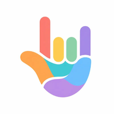

Sign2ConnectSign2Connect watches your hands through your camera and reads out what you sign — bridging the gap between sign and spoken language, right where you're standing.
Your camera feed will appear here. We only process it locally — nothing is uploaded.
Nothing recognized yet.
This demo uses MediaPipe Hands to track 21 hand landmarks live, then applies geometric rules to guess each letter. J and Z are traced motions, so they're recognized from the fingertip's short path over time rather than a single frame. Everything else is a held handshape. Because this is geometry, not a trained model, accuracy varies: letters with a distinct silhouette (B, C, L, O, V, Y...) are the most reliable, while the closed-fist cluster (A, E, M, N, S, T) and orientation-dependent letters (G, H, P, Q) are more likely to get mixed up — hold your hand steady, facing the camera, for the best results.